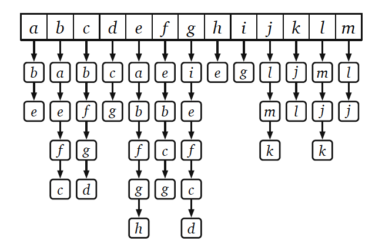
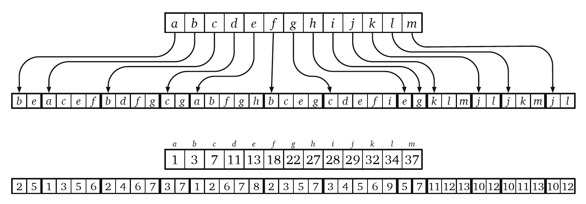
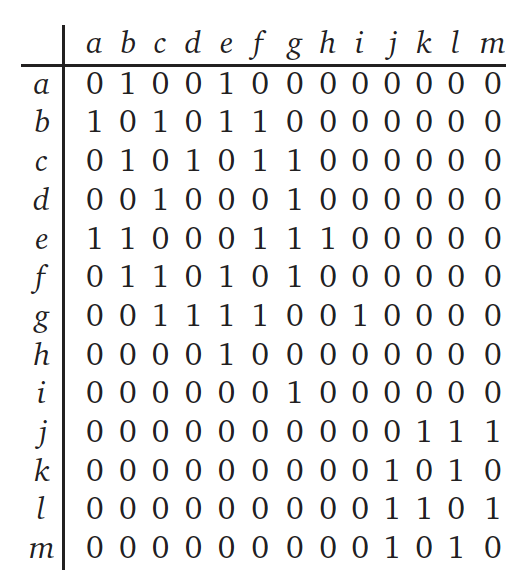

读书笔记之《Algorithms》5
~~ 更新于 -> 2020-11-09
Basic Graph Algorithms（图论基础）
基本定义（可能理解有错误，或翻译不准确）
- 图：一对顶点和边的集合
- 顶点集合：一个非空集合，顶点可以是任何元素，又可以叫做节点
- 边集合：顶点对组成的集合
- 无向图：边中的两个顶点不分前后顺序
- 有向图：边中的两个顶点有前后顺序的
- 端点：边中的两个顶点，在有向图中
u->v，u 是尾，v 是头 - 违例：无向图中禁止相同的一对端点有多于 1 条边，有向图中禁止相同一对头和尾有多于 1 条边；不允许顶点自己与自己成边
- 简单图：没有环和平行边的图
- 多图（multigraphs）：非简单图
- 邻接点：无向图中一条边的两个顶点互为邻接点；一个称为另一个的邻居，反之亦然
- 度：无向图中一个顶点的邻居顶点数量
- 前节点：有向图中
u->v，u 是 v 的前节点 - 后节点：有向图中
u->v，v 是 u 的后节点 - 入度：有向图中一个顶点的前节点数量
- 出度：有向图中一个顶点的后节点数量
- 子图：顶点集合和边集合都是原图的子集
- 适当的子图：原图的子图，但是与原图不同
- 遍历：沿着边依次访问顶点的过程
- 路径：一次每个顶点只被访问了一次的遍历
- 可达：顶点 v 从顶点 u 出发可达指 u 到 v 之间存在一条路径
- 连接的：所有顶点间都是可达的
- 连接子图（components）：最大连接的子图
- 闭合遍历：遍历开始并结束于同一个顶点
- 有环图：每个顶点可以组成闭合遍历，且每个顶点只被访问了一次
- 无环图：图中任何子图都不是环图，无环图又可以叫做森林
- 有向无环图（Dags）：有向图+无环图
- 树：连接的无环图，或者其中的一个连接子图
- 展开树：将图转化为它的无环子图。当且仅当原图为连接图时才可以展开图。
- 展开森林：将图中的各个连接子图展开树组成的森林
简单举例
- 相交图（intersection graph）
- 依赖图（depandency graph）
- 配置图（configuration graph）
- 有限状态自动机（Finite-state automata）
数据结构
邻接表（adjacency list）

邻接数组（adjacency array）

邻接矩阵（adjacency matrices）

书中的典型案例
这一章节主要是图论的基础算法，既是基础、又是模板。
Whatever-First Search
def WhateverFirstSearch(s):
put s into the bag
while the bag is not empty:
take v from the bag
if v is not marked:
mark v
for each edge vw:
put w into the bag
- bag='Stack'
->'Depth First' - bag='Queue'
->'Breadth First' - bag='Priority Queue'
->'Best First'- 最小展开树
- 最短路径
- 最宽路径（最大流量）
Whatever-First Search All
WFSAll(G):
for v in G:
unmark v
for v in G:
if v is unmarked:
WhateverFirstSearch(v)
CountComponents(G):
count = 0
for v in G:
unmark v
for v in G:
if v is unmarked:
count += 1
WhateverFirstSearch(v)
return count
书中习题
（陆续完善……）
同一本书的文章集
- Preface-&-Introduction
- Recursion
- Backtracking
- Dynamic Programming
- Greedy Algorithms
- 回到开头
- Depth-First Search
- Minimum Spanning Trees
- Shortest Paths
- All-Pairs Shortest Paths
- Maximum Flows & Minimum Cuts
- Applications of Flows and Cuts
- NP-Hardness
⚠️ 请先安装一款邮件软件（部分浏览器可能不支持，请使用设备默认浏览器打开本页面）